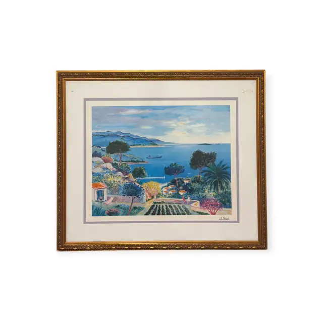
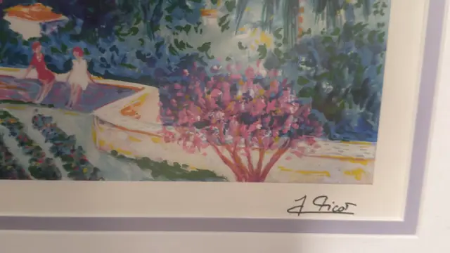
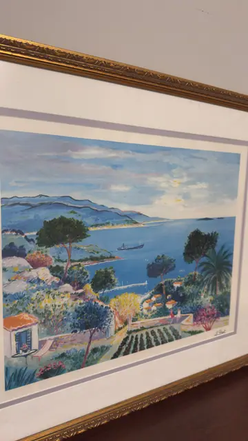
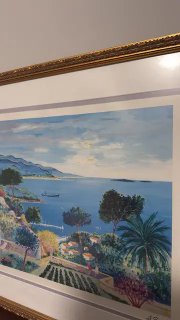
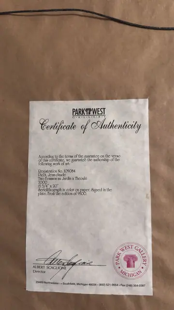

Paintings & Prints
Picot, Two Femmes au Jardin a Theoule, Picot, Jean-claude, Signed in the Plate, Framed, 2000
Picot, Jean-claude · 2000, per the certificate
Price Upon Request





About the Item
Picot, Jean-claude. A high-keyed Riviera view looking down over a terraced garden to a wide turquoise bay with a headland, small islands and a freighter on the horizon. Umbrella pines, a tall palm and a flowering pink tree frame the descent, while ruled rows of vines and a red-roofed villa fill the middle ground. In the upper corner two seated figures in red take the shade under an orange awning. The colour is fauve-bright and unmodulated: cerulean and turquoise water, emerald and olive foliage, coral pink blossom and ochre paths, all drawn with quick calligraphic outlines. Presented in a white mat with a lavender inner border inside an ornate gilt moulding under glass. Medium: seriolithograph in colour on paper. Signed lower right of the sheet, below the image, reading "J Picot". Edition: From the edition of 9500; signed in the plate. Accompanied by a certificate: Park West Gallery COA no. 109084 guaranteeing a 2000 seriolithograph by Jean-Claude Picot, 15 3/4 x 20 in, plate-signed, from an edition of 9500, signed by director Albert Scaglione. Inscribed on the reverse or mount: PARK WEST GALLERY; Certificate of Authenticity; According to the terms of the guarantee on the verso of this certificate, we guarantee the authorship of the following work of art:; Registration No. 109084. Condition: Image and mat appear clean and unfaded. A small adhesive/tape residue mark sits on the mat near the top edge, visible in IMG_9118. Glass glare in the angled shots.
Details
- Creator:
- Picot, Jean-claude
- Creation Year:
- 2000, per the certificate
- Dimensions:
- Height: 26.0 in (66.04 cm)
Width: 30.0 in (76.2 cm)
outside of frame - Medium:
- seriolithograph in colour on paper
- Edition:
- From the edition of 9500; signed in the plate
- Period:
- 21St
- Condition:
- Offered in the condition shown in the photographs.
- Reference Number:
- VO-177
- Documentation:
- Park West Gallery COA no. 109084 guaranteeing a 2000 seriolithograph by Jean-Claude Picot, 15 3/4 x 20 in, plate-signed, from an edition of 9500, signed by director Albert Scaglione.
- Gallery Location:
- Park West Gallery